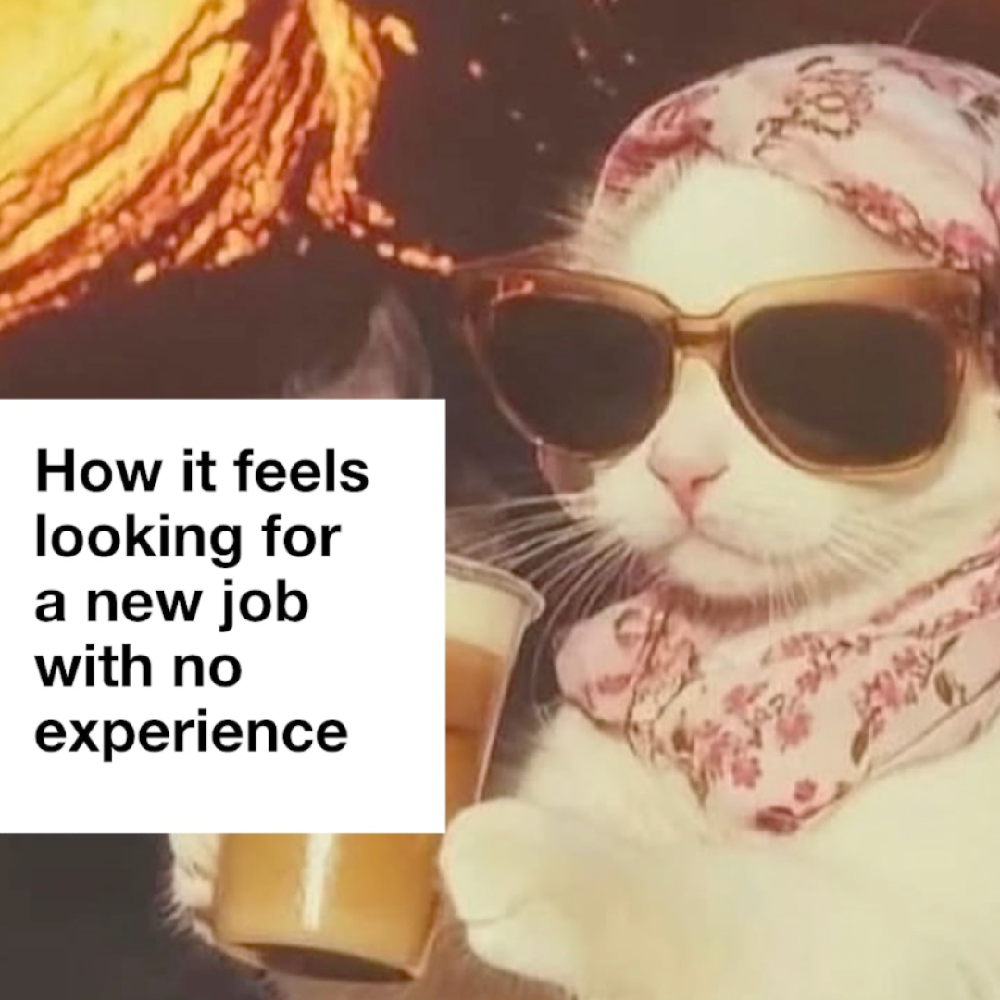
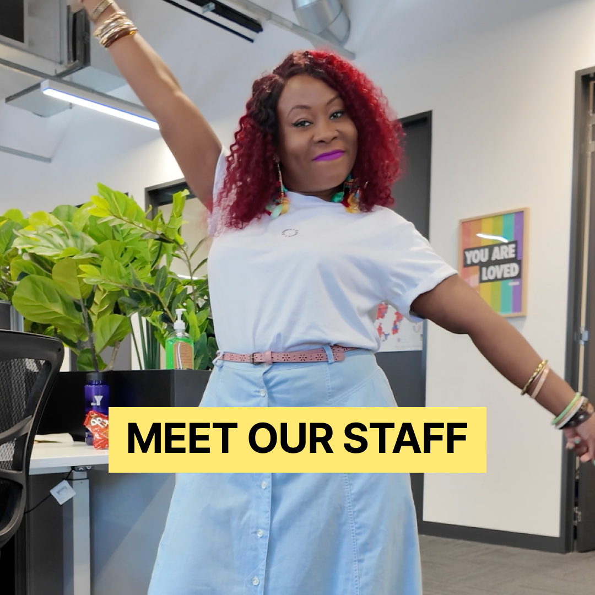
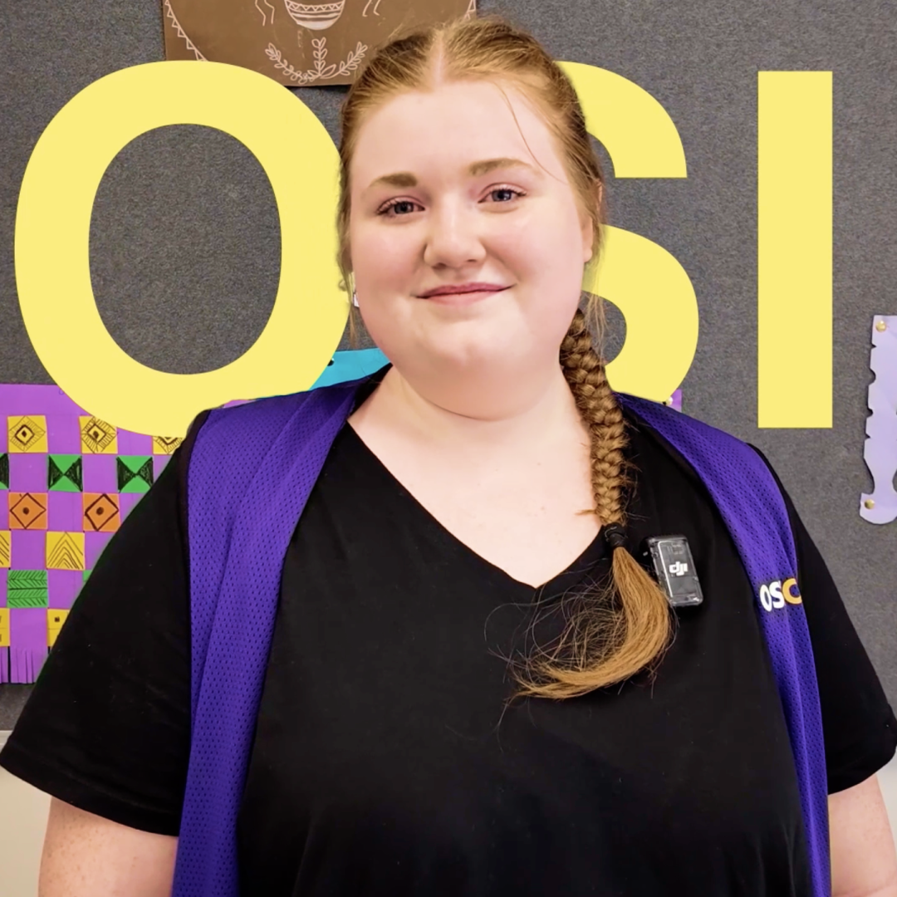

Y Careers is a not-for-profit social enterprise dedicated to bridging the gap in the care industry's workforce. I built this brand from the ground up — from concept and co-design workshops through to a full visual identity, design system, social strategy, video, and motion.
Rather than assuming what young people wanted, I ran workshops directly with them to shape both the brand direction and social media strategy.
Running co-design sessions with young people to ensure the Y Careers brand genuinely reflected their voice — not what we assumed they'd want.





I translated outdated guidelines into a fresh, youth-focused identity that resonates with Gen Z, and I've driven how the brand shows up across video, motion graphics, social media, and web.


Please reach out.
josephine.de.maria@gmail.com